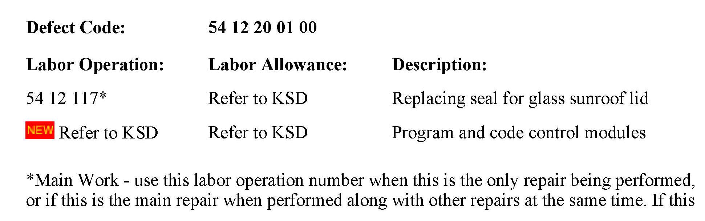
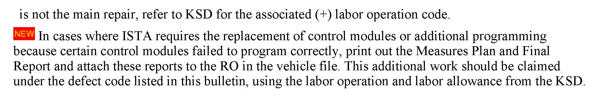

Body - Wind Noise/Water Leaks From Sunroof
SI B54 04 09Special Roofs
August 2009
Technical Service
This Service Information bulletin supersedes SI B54 04 09 dated May 2009.
[NEW] designates changes to this revision
Wind Noise or Water Leak from the Sunroof
MODEL
[NEW] E53 (X5)
[NEW] E60, E61 (5 Series) produced up to 11/2008
E65, E66 (7 Series)
[NEW] E70 (X5) produced up to 3/2009
F01, F02 (7 Series) produced up to 12/2008
E71 (X6) produced up to 3/2009
[NEW] E83 (X3) produced up to 6/2009
[NEW] E91 (3 Series Sports Wagon) produced up to 3/2009
A wind noise or water leak may be present due to an insufficient seal between the sunroof glass panels and the perimeter seal. This insufficient seal typically takes a year or longer to cause any noticeable problems.
^ The hollow/bulb-style seal has taken a permanent set in the compressed position.
^ The seal material has started to deteriorate over time.
Replace the seal using an updated part, which utilizes a different material with improved durability. In addition, the geometry of the seal has been optimized for improved sealing.
In conjunction with this new style seal, some vehicles may requite a coding update to avoid future problems pertaining to the anti-trap protection being activated when no obstruction is present.
1. Replace the perimeter seal per Repair Instruction REP 54 13 055.
[NEW] 2. E60 and E61 vehicles produced up to 11/2008:
Program the vehicle using ISTA/P 2.31.2 or later.
[NEW] E70 and E71 vehicles produced up to 3/2009:
Program the vehicle using ISTA/P 2.33.0 or later.
[NEW] E83 vehicles produced up to 6/2009:
Program the vehicle using ISTA/P 2.34.0 or later.
[NEW] E91 vehicles produced up to 3/2009:
Program the vehicle using ISTA/P 2.33.0 or later.
[NEW] E53 - No updates are required when fitting the updated seal to this vehicle.
Note that ISTA/P will automatically reprogram and code all programmable control modules that do not have the latest software.
For information on programming and coding with ISTA/P, refer to CenterNet / Aftersales Portal / Service / Workshop Technology / Vehicle Programming.
Other models covered by this Service Information do not require a coding update.
3. Initialize the sunroof per Repair Instruction RA 54 0... and then operate it several times to ensure that it does not activate anti-trap protection. If anti-trap protection is activated, it will be necessary to replace the recently installed, updated seal with the original-style seal per the Electronic Parts Catalog (EPC). This scenario is quite rare.
PARTS INFORMATION
WARRANTY INFORMATION


Covered under the terms of the BMW New Vehicle Limited Warranty.

Disclaimer